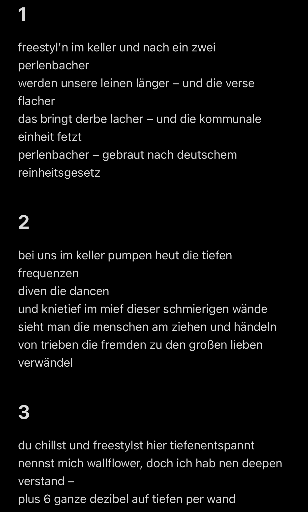

Multiple Choice Freestyle Poem
[248]Bin echt kaputt, aber haben heute bei 'nem Kollegen bisschen gefreestylt; könnt euch selber eins aussuchen:
- [ ] Freestyl'n im Keller und nach ein, zwei Perlenbacher
Werden uns're Leinen länger – und die Verse flacher,
Das bringt derbe Lacher – und die kommunale Einheit fetzt –
Perlenbacher – gebraut nach deutschem Reinheitsgesetz.
- [ ] Bei uns im Keller pumpen heut' die tiefen Frequenzen,
Diven, die dancen,
Und knietief im Mief dieser schmierigen Wände,
Sieht man die Menschen am Ziehen und Händeln
Von Trieben, die Fremden zu den großen Lieben verwändeln.
- [ ] Du chillst und freestylst hier tiefenentspannt,
Nennst mich Wallflower, doch ich hab' 'nen deepen Verstand –
Plus sechs ganze Dezibel auf Tiefen per Wand.

